いきなりですが、グッズの特集記事を始めてみたいと思います。その第１弾として、まずはわんだほうの頃に発売されたお菓子『パチッチョ』を取り上げてみました。パチッチョはアニメでもミルモが食べているシーンがありましたね。（以下、画像は転載禁止です）
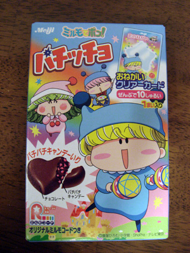
パッケージ表面
発売元は明治製菓さんです。チョコレートの中に入っているパチパチキャンディーのおかげで、食べると刺激的なパチパチが…！ 甘い物苦手な私でも美味しく食べられました。
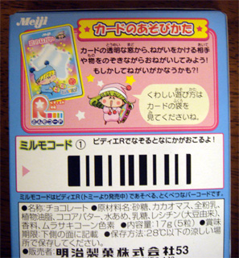
パッケージ裏面
おまけとして、全１０種類のカードが付いてきます。リルムの言っているカードの袋が残っていなくて、詳しい遊び方が分からず終いだったりします(^◇^;)。
ミルモコードも懐かしい！ミルモコードはまた別の機会に取り上げるつもりです。
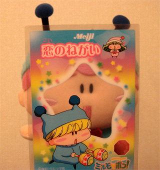
とりあえず遊んでみました(^^)
それではこれより全１０種のカードを紹介します。全部集めるのに２０個以上買ったような気が…。なぜマイナーなコロロがいるのか、なぜワルモ団が天気の願いなのかは永遠の謎です。
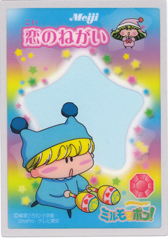 
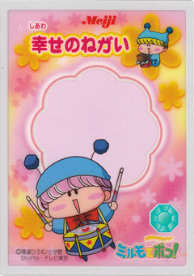 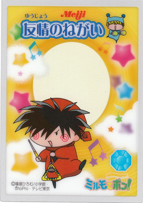
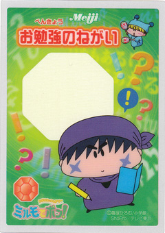 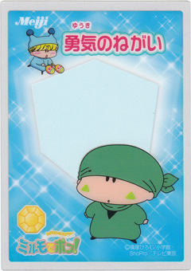
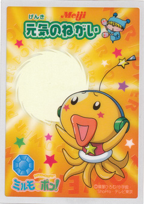 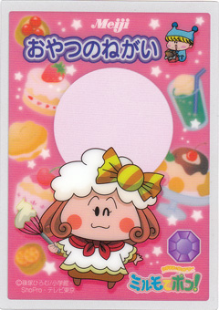
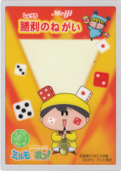 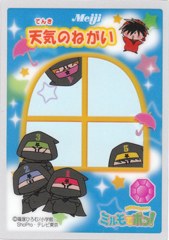
いかがでしたでしょうか？当時は次から次へとグッズが発売されるので集めるのが大変でしたが、今となってはそれも良い思い出です。皆さんからもグッズ情報がありましたら、掲示板などでお知らせくださいね。。
(2009/1/19)